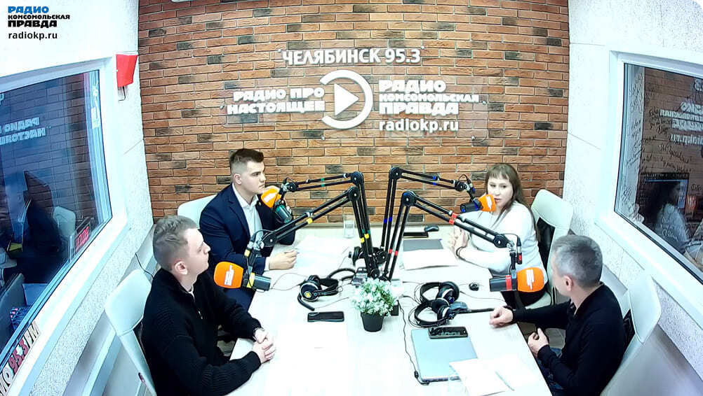
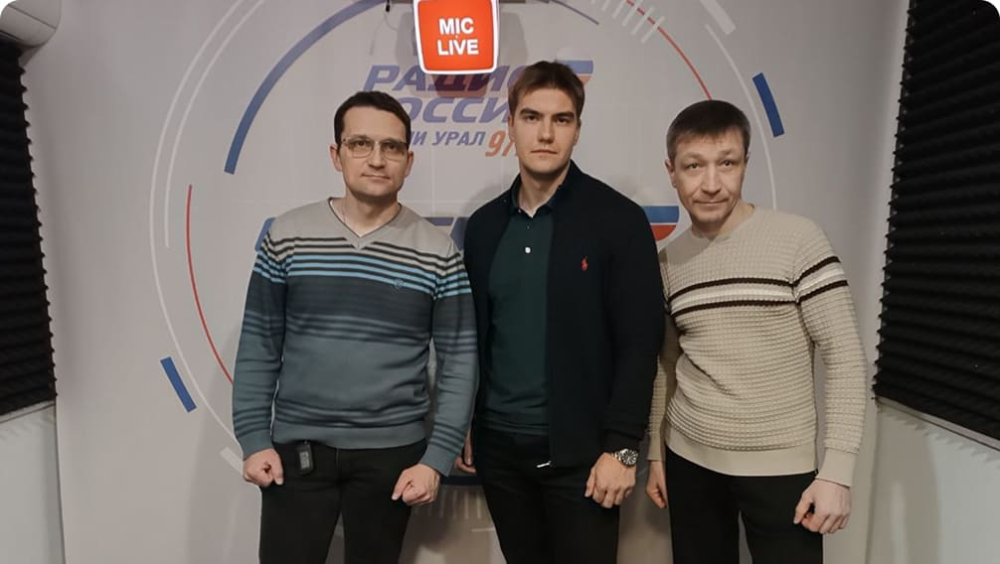

Радио «Комсомольская правда»Как распознать финансовую пирамиду?
Какие обещания должны насторожить и что обсудить с адвокатом, если деньги уже переданы.
Открыть запись в VK ↗Пять вопросов помогут собрать обращение. В конце вы сможете проверить ответы и передать их адвокату через Telegram.
Выберите направление по вашей ситуации.
Помощь при задержании, на следствии и в суде.
Частные споры↗Долги, договоры, имущество и трудовые споры.
Для бизнеса↗Договорные споры и долги контрагентов.
КАС РФ↗Оспаривание решений и действий органов власти.
КоАП РФ↗Штрафы, протоколы и споры о водительских правах.
Каталог↗ДТП, представительство в суде, составление исков и другие услуги.
Адвокат в Челябинске. На первой встрече изучаю документы, объясняю возможные действия и помогаю определить следующий шаг.
Об опыте и образовании ↗
Радио «Комсомольская правда»Какие обещания должны насторожить и что обсудить с адвокатом, если деньги уже переданы.
Открыть запись в VK ↗
РадиоэфирКак мошенники используют чужие документы и доступ к банковским приложениям для оформления кредита.
Открыть запись в VK ↗Учитель физической культуры обратился за помощью в восстановлении его на работе после увольнения.
Учитель физической культуры обратился за помощью в восстановлении его на работе после увольнения. Из-за конфликта с директором школы учитель в течение года неоднократно подвергался незаконным и необоснованным дисциплинарным взысканиям, после чего был уволен за неоднократное неисполнение служебных обязанностей.
После подачи искового заявления приказы о дисциплинарном взыскании были отменены, увольнение признано незаконным, учитель восстановлен в должности с компенсацией суммы вынужденного прогула, судебных расходов и морального вреда.
Гражданин под влиянием мошенников обратился в банк и заключил договор потребительского кредита на сумму 1.200.000 рублей.
Гражданин под влиянием мошенников обратился в банк и заключил договор потребительского кредита на сумму 1.200.000 рублей. После чего перечислил денежные средства в адрес мошенников. Банк потребовал с гражданина сумму долга и проценты по кредиту.
После анализа ситуации было подано исковое заявление о признании договора потребительского кредита недействительным. В обоснование требований было заявлено, что банк нарушил обязательные предписания Центрального банка, а гражданин в момент заключения сделки находился в таком состоянии, при котором не мог понимать значение своих действий и руководить ими. Суд признал сделку недействительной, решение устояло в кассационном суде.
В ходе дорожно - транспортного происшествия пенсионер - водитель повредил дорогое автотранспортное средство, был признан виновником ДТП.
В ходе дорожно - транспортного происшествия пенсионер - водитель повредил дорогое автотранспортное средство, был признан виновником ДТП. Водитель поврежденного автомобиля обратился к пенсионеру за взысканием суммы ущерба сверх выплаченного страхового возмещения.
В судебном разбирательстве удалось доказать, что страховая организация не в полном объеме выполнила свои обязательства по выплате страхового возмещения. В результате чего суд вынес решение, согласно которому страховая организация была обязано доплатить виновнику сумму невыплаченного страхового возмещения, а пенсионер был освобожден от каки-либо выплат и иных штрафных санкций.
После рассмотрения уголовного дела в апелляционной инстанции гражданин обратился с просьбой оспорить конфискацию автомобиля по приговору суда.
После рассмотрения уголовного дела в апелляционной инстанции гражданин обратился с просьбой оспорить конфискацию автомобиля по приговору суда.
Адвокат подготовил кассационную жалобу, участвовал в кассационном рассмотрении. В итоговом судебном акте суд изменил приговор и апелляционное определение суда в части конфискации решение отменил.
На стадии предварительного расследования к адвокату обратился гражданин, привлекаемый к уголовной ответственности по ч.1 ст.
На стадии предварительного расследования к адвокату обратился гражданин, привлекаемый к уголовной ответственности по ч.1 ст. 228 УК РФ за хранение наркотических средств.
Поскольку гражданин в первый раз привлекался к ответственности, ранее не судим, имеет положительные характеристики, по ходатайству адвоката суд прекратил уголовное преследование с назначением судебного штрафа, что помогло гражданину избежать судимости.
Гражданин обратился за юридической помощью в защите от уголовного преследования по части 2 ст 178 УК РФ.
Гражданин обратился за юридической помощью в защите от уголовного преследования по части 2 ст 178 УК РФ. Адвокат активно участвовала производстве обыска, оспаривали изъятие документов и электронных носителей.
После десяти месячного производства органы следствия по ходатайству адвоката приняли решение о прекращении уголовного преследования в связи с отсутствием в действиях лица состава уголовного преступления. Прекращение уголовного дела дало право подозреваемому на реабилитацию.
Гражданин обратился с просьбой пересмотреть кадастровую стоимость объекта недвижимости, поскольку после заключения договора дарения, налоговый орган предъявил к нему значительные требования по уплате налога на прибыль.
Гражданин обратился с просьбой пересмотреть кадастровую стоимость объекта недвижимости, поскольку после заключения договора дарения, налоговый орган предъявил к нему значительные требования по уплате налога на прибыль.
После обращения к независимому оценщику, кадастровая стоимость квартиры была снижена более чем в три раза, в результате чего налоговый орган также пропорционально снизил свои претензии.
Супруга мобилизованного гражданина обратилась за помощь в оспаривании решения по мобилизации, поскольку супруг был трудоустроен на стратегическом предприятии, но до появления списков бронирования уехал исполнять воинский долг.
Супруга мобилизованного гражданина обратилась за помощь в оспаривании решения по мобилизации, поскольку супруг был трудоустроен на стратегическом предприятии, но до появления списков бронирования уехал исполнять воинский долг.
При подготовке искового заявления было заявлено ходатайство о приостановке исполнения решения о мобилизации, в результате чего удалось оставить мобилизованного супруга на территории Челябинской области, а после признать решение о мобилизации недействительным и возвратить работника обратно на стратегическое предприятие.
Организация обратилась за юридической помощью в оспаривании Решения КУИЗО по разграничению балансовой принадлежности земельных участок.
Организация обратилась за юридической помощью в оспаривании Решения КУИЗО по разграничению балансовой принадлежности земельных участок. Поскольку организация имеет 1/3 доли собственности здания, а земельный участок полностью принадлежит компании, в течении 11 лет организация несла убытки по оплате земельного налога за иных собственников здания. Добровольно собственниками земельного участка собственники строения быть не хотели.
В ходе оспаривания решения по определению кадастровой границы участка, суд услышал доводы Истца о неотъемлемости строения и земельного участка и постановил решение о долевой собственности участка, находящегося под зданием. Теперь организация может существенно экономить денежные средства на уплату земельного участка.
Организация обратилась за юридической помощью в вопросе взыскания задолженности по договору поставки с иностранным контрагентом.
Организация обратилась за юридической помощью в вопросе взыскания задолженности по договору поставки с иностранным контрагентом. Покупатель в лице доверителя внес предоплату за поставленный товар, после чего продавец перестал выходить на связь, оплаченный товар не был поставлен. Поставщик сослался на неправильность заполненных документов за трансграничные перевозки.
Гражданское дело удалось рассмотреть в российской юрисдикции ,по российским нормам права. В обоснование исковых требований были приведены доводы Конвенции о международных железнодорожных перевозках, в итоге суд принял позицию Истца и взыскал с иностранного поставщика задолженность по договору поставки.
Доверитель обратился с поручением о взыскании денежных средств за выполнение работ с заказчика по договору строительного подряда.
Доверитель обратился с поручением о взыскании денежных средств за выполнение работ с заказчика по договору строительного подряда. Организация всячески уклонялась от принятия выполненных работ, не хотела оплачивать скрытые работы, о наличии которых была заранее уведомлена и согласовала их с подрядчиком.
Арбитражным судом исковые требования подрядчика были удовлетворены в полном объеме. Суд посчитал обоснованным формат согласования работ путем электронного документооборота, помимо задолженности с Заказчика были взысканы неустойка и проценты за пользование чужими денежными средствами.
Арендодатель обратился к Доверителю (арендатору) с требованием о взыскании задолженности за аренду нежилого помещения по договору.
Арендодатель обратился к Доверителю (арендатору) с требованием о взыскании задолженности за аренду нежилого помещения по договору. Предметом спра являлось помещение переданное арендатору по акту, но фактически не освобожденное арендодателем для последующей эксплуатации.
В результате судебного спора удалось доказать, что помещение фактически не использовалось и было передано арендатору с условием его освобождения в течении одного месяца после заключения договора. Поскольку арендодателем условия договора выполнены не были, суд принял сторону доверителя и отказал истцу во взыскании по договору аренды.
Кратко опишите, что произошло и какой результат вам нужен. Если уже назначены заседание или допрос, сразу сообщите дату.
Пригодятся материалы по вашему вопросу — договор, переписка, претензия, протокол или судебный акт. Если документов пока нет, начните с описания ситуации.
После изучения обстоятельств обсудим возможные действия, объём помощи и стоимость. Условия работы по делу фиксируются в соглашении.
Да, начните со звонка. Скажите, кому требуется помощь, где находится человек и что вам известно о ситуации.
Первичную ситуацию можно описать по телефону. Дальнейший формат зависит от вопроса и документов.
Сообщите дату, суд и номер дела при первом обращении. Это поможет определить, сколько времени есть на подготовку.
Можно обратиться за составлением иска, возражений, ходатайства или жалобы. По материалам дела обсудим содержание документа и объём работы.
Позвоните, чтобы договориться о консультации, или напишите в Telegram.